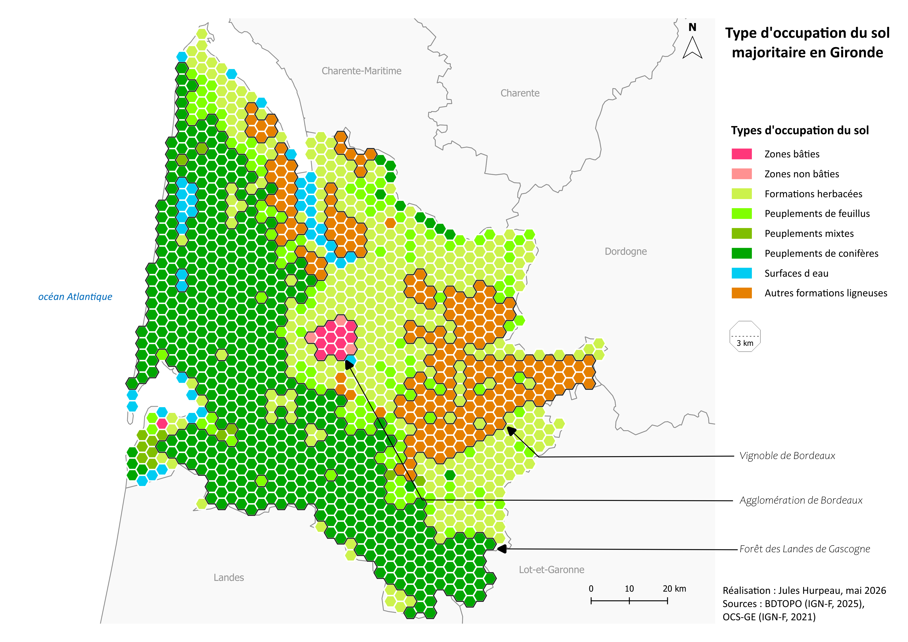
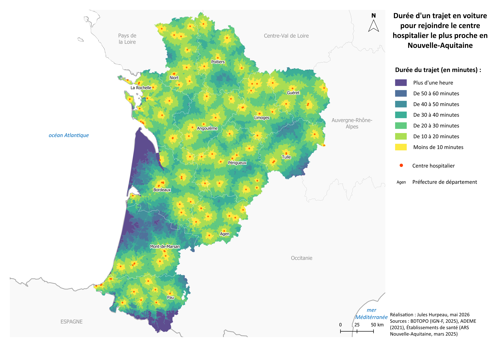
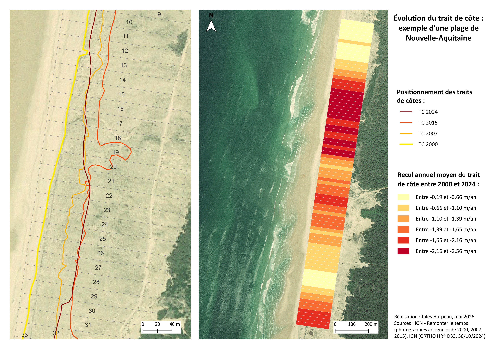
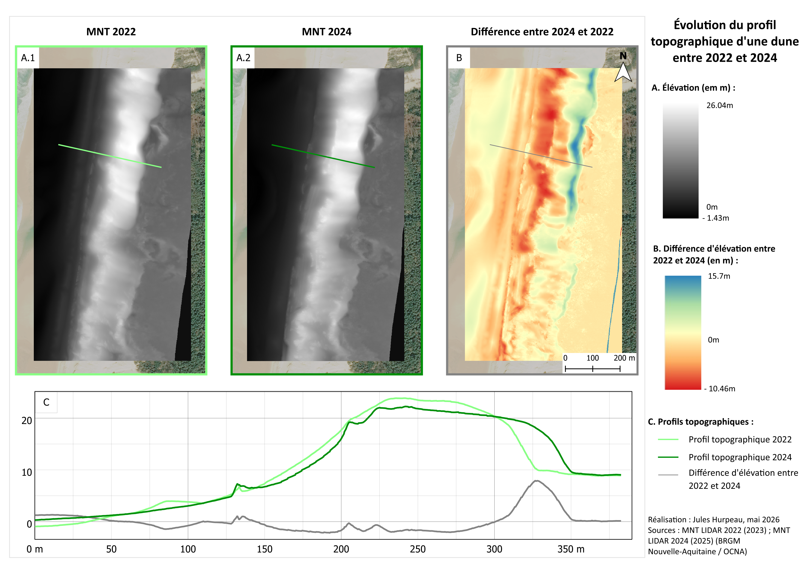

Passionné par les enjeux environnementaux, je me suis naturellement orienté vers des études de géographie en licence et en master.
En licence (Université Bordeaux Montaigne), j'ai été formé à l'aménagement du territoire (grands principes de l'urbanisme, fonctionnement des collectivités territoriales) et à la géographie physique (enjeux climatiques, ressources naturelles).
Puis en master (Nantes Université), je me suis spécialisé en aménagement du littoral. J'ai pu développer mes compétences en cartographie et SIG, en connaissance des milieux littoraux, et aussi en gestion et culture du risque.
J'ai effectué mon dernier semestre de master en stage au sein du groupe Mer, Énergies et Littoral (MEL) du Cerema Normandie-Centre. Mon objectif était d'étudier puis de cartographier l'évolution passée et future d'un estuaire complexe, appelé "havre" dans le département de la Manche.
Ce travail faisait partie de l'élaboration des Cartes Locales d'Exposition au Recul du Trait de Côte (CLERTC) pour une communauté de communes manchoise.
J'ai ensuite poursuivi cette expérience avec le groupe MEL pendant neuf mois. Intégré à l'équipe projet, j'ai participé à l'étude des CLERTC cette fois sur l'ensemble du littoral intercommunal. J'ai par la suite été intégré à d'autres études portant sur le littoral.
À l'issue de ce contrat, j'ai rejoint le Bureau des Risques Naturels et Technologiques (BRNT) de la DDTM de Seine-Maritime. Mon objectif était de mettre à jour deux PPRI de la Seine normande, sur le volet cartographique. Je pouvais apporter un appui sur des cartes de cavités souterraines plus ponctuellement.
De retour en Nouvelle-Aquitaine, je suis à la recherche de nouvelles opportunités dans les domaines de l'aménagement, des SIG, de l'environnement.
Vous pouvez trouver ci-après des cartes que j'ai réalisées. D'autres arriveront quand elles seront prêtes !

Cette carte s'inspire du travail d'un autre cartographe, Kevin Prieur : sa carte représentait le type d'occupation du sol majoritaire en Hérault.
J'ai donc souhaité représenter le type d'occupation du sol majoritaire en Gironde.
Divisée avec des hexagones de 3 kilomètres de large, cette carte est à la fois synthétique et révélatrice des activités girondines : l'ouest du département est dominé par des conifères, plus particulièrement des pins maritimes. Cette culture du pin sert à la production de papier, à la menuiserie, à la construction. L'est du département est quand à lui dominé par l'agriculture, et plus particulièrement par la viticulture : les hexagones oranges témoignent de l'importante surface dédiée à la viticulture.

Cette carte en isochrone illustre la proximité (ou l'éloignement) des néo-aquitains avec le centre hospitalier le plus proche.
Si la majorité des habitants habite à moins d'une demie-heure de l'hôpital le plus proche, d'autres semblent plus isolés : c'est le cas des habitants du Médoc en Gironde, de la côte landaise, et du sud des Pyrénées-Atlantique.

Les côtes françaises sont particulièrment exposées aux phénomènes d'érosion et de submersion.
Les côtes sableuses connaissent aussi des périodes d'accrétion (avancée du trait de côte vers la mer) :
ainsi, le marqueur du trait de côte (ici, la limite de la végétation) peut évoluer d'une année à l'autre en fonction des aléas (tempêtes, marées).
La carte ci-contre illustre l'évolution d'une portion du littoral néo-aquitain. À partir d'images aériennes géoréférencées, nous pouvons tracer les traits de
côte des années 2000 à 2024. La distance entre deux traits de côte permet d'obtenir le rythme d'érosion, et peut servir à déterminer
sa position future.

Cette analyse de deux MNT illustre l'évolution d'une dune de Nouvelle-Aquitaine, entre 2022 et 2024.
Ici, deux Modèles Numériques de Terrain ont été téléchargés, et découpés selon une emprise identique (A1 ; A2). Ensuite, la calculatrice raster m'a permis de soustraire ces deux MNT, afin d'obtenir la différence d'altitude pour chaque pixel d'un mètre (B). Ainsi, les pixels rouges représentent une érosion de la dune, tandis que les pixels bleus représentent un engraissement de la dune. Enfin, un graphique (C) permet de visualiser l'évolution selon un transect perpendiculaire au trait de côte :
nous remarquons que la dune a tendance à s'éroder légèrement, sauf en arrière, où elle connait un engraissement important (de l'ordre de 7m au niveau du transect, de l'ordre de 15m de part et d'autre). La forêt de pins à l'est retient le sable.
L'analyse de MNT peut-être préconisée à la suite d'une tempête, ou pour suivre l'évolution d'un estran (rocheux, sableux) sur un temps long.